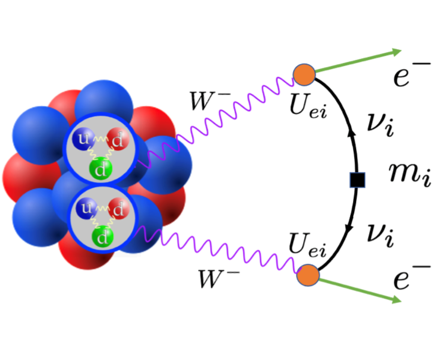
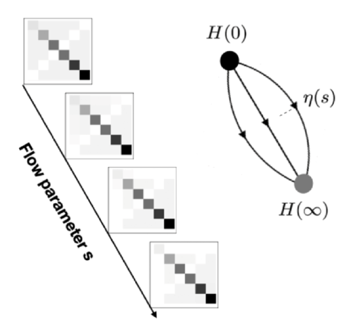
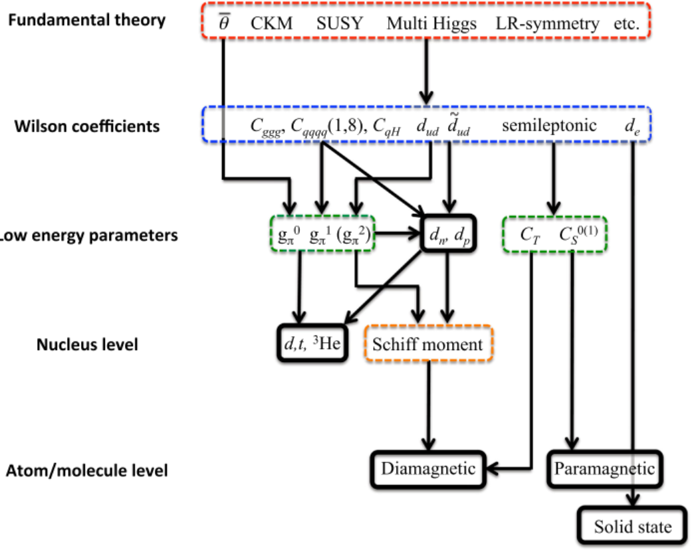

无中微子双贝塔衰变
无中微子双贝塔衰变是当前国际上粒子物理与核物理研究领域的重要科学前沿，是可能突破粒子物理标准模型的研究方向之一 。通过寻找原子核无中微子双贝塔衰变有望回答或者解决一些基本的科学问题，包括轻子数是否守恒，中微子是否具有马约拉纳属性以及中微子的绝对质量标度等。这些问题的回答以及解决有助于理解宇宙中正反物质不对称之谜等重大科学问题。鉴于无中微子双贝塔衰变的重要研究意义，我国自然科学基金委-中国学科发展战略丛书、美国能源部-核物理长期发展规划以及欧洲科学长期发展规划书中, 都把无中微子双贝塔衰变研究列为优先资助的大科学项目。在无中微子双贝塔衰变研究中，核矩阵元大小直接决定衰变的快慢，影响中微子质量确定的精度。因此核矩阵元的研究是最关键的理论研究课题之一。
More

原子核结构的第一性原理计算
原子核从头计算方法从现实核力出发，通过近似严格求解（或者采用逐级收敛的多体方法近似求解）原子核波函数来研究核结构与衰变属性。由于现实核力存在强排斥芯，在动量空间表现为高低动量态之间的强耦合，使得多体计算的收敛变得很困难，对计算机运算能力提出更高要求。因此，原子核从头计算方法在很长一段时间进展缓慢。尽管存在很大挑战，原子核从头计算有助于理解不同多体方法之间由于模型空间截断引起的计算结果的差异，即实现从相同手征核力出发，计算相同物理量，分析并量化导致差异的原因，从而最终获得较为可靠的理论结果。因此，实现从轻到重原子核的从头计算一直是核理论工作者追求的目标。
More

Nuclear Schiff moments and electric dipole moments researches
The origin of the matter-antimatter asymmetry in the Universe is a fundamental and unresolved mystery. The creation of the asymmetry requires the violation of
charge-parity (CP) symmetry. CP violation in the Standard Model, from the phase of the Cabibbo-Kobayashi-Maskawa (CKM) matrix and the θ term in QCD, is too weak, suggesting the presence of stronger CP violation
beyond the Standard Model. Searches for permanent electric dipole moments (EDMs) in nucleons, atoms, and molecules have the potential to discover new CP violation.
More
Modeling nuclear beta decay with operators from chiral EFT
The origin of elements heavier than iron in the universe is one of the central problems in contemporary nuclear astrophysics. These heavy elements are primarily produced through the rapid neutron-capture process (r-process), which is widely believed to occur in astrophysical environments such as neutron-star mergers. A quantitative understanding of the r-process requires reliable nuclear-structure and reaction data for neutron-rich nuclei, in particular nuclear masses and single beta-decay half-lives. Since most of these nuclei are experimentally inaccessible, the required data rely heavily on theoretical calculations.
More相对论现实核力与相对论量子多体计算
从现实核力出发实现原子核结构和反应的从头计算，是核物理研究长期追求的重要目标和当前研究的前沿热点。目前绝大多数从头计算都是基于非相对论的现实核力以及量子多体方法，但原子核的相对论从头计算依然重要。首先作为输入量的核力来源于强相互作用的剩余，需要由量子色动力学相关协变理论得到。其次原子核中存在着显著的相对论多体系统特征，协变密度泛函理论的成功也说明相对论多体理论描述原子核的优越性。最后与原子核息息相关的重离子碰撞、核天体以及中子星，涉及到了高密核物质以及粒子转化等过程，更应当在相对论框架下研究。
More